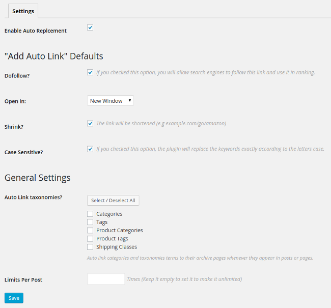
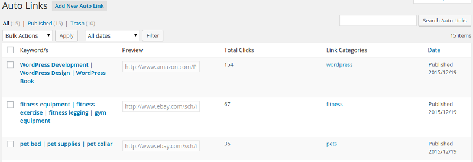

Overview

Thank you for purchasing Affiliate Butler Pro. If you have any questions that are beyond the scope of this help file, please feel free to email me. Thanks so much!
- Updated: 22/12/2015
- By: Waseem Senjer
- Support: Tickets System
- Contact: waseem.senjer@gmail.com
Affiliate Butler is a WordPress plugin that helps you to replace a specific keywords to links automatically. Are you tired of linking websites in your post? This plugin will solve your problem. Link your keywords once and forget about them. Are you an affiliate marketer, you don't have to insert your affiliate links manually every time you write a blog post. Replace the keywords with External and Internal URLs, Image, Gallery, Maps and Videos popups, and social media sharing tooltip.
Installation
Uploading in WordPress Dashboard
- Navigate to the 'Add New' in the plugins dashboard
- Navigate to the 'Upload' area
- Select affiliate-butler-pro.zip from your computer
- Click 'Install Now'
- Activate the plugin in the Plugin dashboard
Using FTP
- Download affiliate-butler-pro.zip
- Extract the affiliate-butler-pro directory to your computer
- Upload the affiliate-butler-pro directory to the /wp-content/plugins/ directory
- Activate the plugin in the Plugin dashboard
Settings
Affiliate Butler comes with several settings to make you take full control of the plugin, thus I will add more settings to cope with the new features. I will add more and more features in the next releases, so stay tuned.
- Enable Auto Replcement: This option is a global switch for the plugin, If you want to disable the replacement of the keywords temporiraly without deactivating the whole plugin, you just need to uncheck this option.
- Dofollow? if you checked this option, you will allow search engines to follow this link and use it in ranking. It's simply add (rel=nofollow) if you unchecked it.
- Open in When the visitor click on the link, it's either open in a new window or the same window.
- Shrink? If you checked this option, the link will be shortened.
- Case Sensitive? The plugin will replace the keywords exactly according to the letters case.
- Auto Link Taxonomies? Auto link categories and taxonomies terms to their archive pages whenever they appear in posts or pages.
- Limits Per Post Limit the number of times that the keyword will be converted to a link per post.
Auto Links Management
Auto Links Table
This is the table where you find all your links, from this page you can (edit,delete) the link. Also, It will show the keywords of the link, the original link. You can go to this page from the Admin Menu (Auto Links ↣ All Auto Links)
Add Auto Link
"Auto Links" ↣ "Add New Auto Link"

This is the main page where you will add the links with the keywords.
- You can add one keywords or multiple keywords. To add another keyword, click on "Add Row" button and a text new text box will show up. Another keyword? click again on "Add Row"
- Now Add the required URL, When the visitor click on the keyword that you previously added, the plugin will take him to this URL.
- The other options I explained them in the Settings section
- Last thing, There is an option called slug, This one is disabled by default, but if you choosed to "shrink" the link, this option will be activated with an auto generated text, you can change it if you want.
Links Types

The plugin has a cool features, For example, if you want to link the keywords to a specific post or page, you only need to change the link type to "internal" and then choose the post or page by typing its title in the bottom select list as you see in the image above.
Other available link types:
Auto Link with Image popup.

Link keywords with Popup image.

The result
Auto Link with images gallery popup.

Link keywords with Popup image.
Auto Link with video popup.

Link keywords with Popup video (Youtube and Vimeo supported).

The result
Auto Link with google maps.

Link keywords with google maps. (Dashboard)

The result
Auto Link keywords with a share tooltip.

Link keywords with a share tooltip (Dashboard)

The result
Statistics

Even if the link was external, the plugin will be able to track the link and provides you with many statistics (Visits per day, Countries, Browsers, Operating Systems ). I will add more features in the statistics page in order to provide the plugin user of the maximum benefits of statistics and tracking.
Support
Do you have any problem? Did you encounter a bug in the plugin? Do you need a new feature to be included in the plugin? Do not hesitate dropping me a support ticket.
Credits
- jBox by Stephan Wagner
- Magnific Popup by Dmitry Semenov
- CMB2 by WebDevStudios
- Select2 - Select2 is a jQuery based replacement for select boxes.
- ChartJS by Nick Downie
- jQuery Vector Map Library by Peter Schmalfeldt